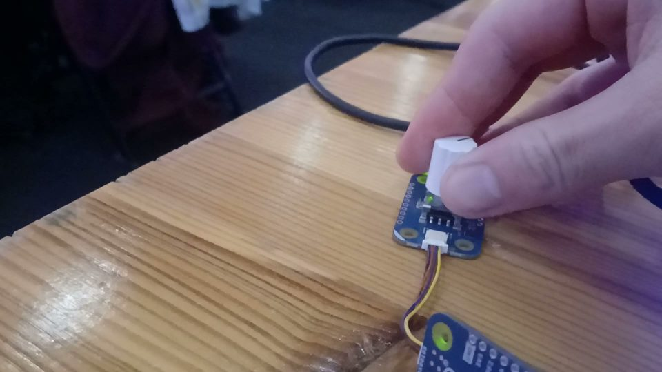
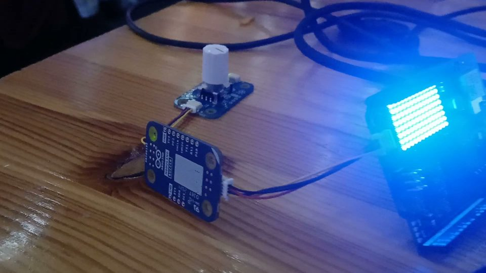

Part 1
Be the decoder: was a 0 or a 1 stored?
- Look at the red clues and the final readout.
- Guess whether IBM stored a 0 or a 1.
- See who was right: you, a simple vote, the classical decoder or the AI.
IBM's chip stored one bit, 0 or 1, copied onto a line of data qubits (circles). Helper checks (squares) kept asking "are my two neighbours still the same?" three times. A red check means its answer changed: a clue that a neighbour flipped around then. At the end all data qubits are read (bottom row). Some of them flipped by accident. Can you tell what was stored?
Your answer:
| Correct | Played | |
|---|---|---|
| You | 0 | 0 |
| Majority vote | 0 | |
| Union-find (classical) | 0 | |
| AI decoder | 0 |
Part 2
More qubits, fewer mistakes, and the AI makes the fewest
Each point is the share of 4,000 real shots a decoder got wrong. Lines going down mean error correction works: spreading one bit over more qubits makes the answer more reliable. Hover or tap a point for the number.
Classical reference: PyMatching, the matching decoder used by researchers, run on a laptop with an error model learned from the data (the better of two models is shown). Union-find and the AI ran on the Arduino. The AI is only ever scored on shots it did not train on. "0 errors" means fewer than 1 in 4,000 and is drawn at the bottom. At the lowest error rates the ratios rest on a handful of failures (the 9.5× on ibm_marrakesh is 2 failures against 19 in 4,000 shots), so they carry large uncertainty.
Part 3
Turn the knob: can the Arduino keep up?
A real quantum computer produces a new round of clues every few microseconds, forever. The decoder must finish each shot before the next ones pile up, like a cashier with a queue. On the board, the Modulino Knob sets how fast clues arrive; here you can turn it with the mouse, a finger or the arrow keys.
8×13 LED matrix: height = shots waiting (log scale, like the real board)


How this twin works: real shots arrive every 3 rounds × τ, and each takes the mean decode time measured on the STM32 (ibm_marrakesh, distance 5, 3 rounds, interrupts on), with ±12% random variation. The real board replays thousands of real shots from its own memory and times every decode with its cycle counter. IBM's superconducting chips need about 1 µs per round, too fast for a microcontroller. Neutral-atom and trapped-ion machines take about 1 ms per round, about 100× more time than the Arduino needs.
Part 4 · The Green European Renaissance
Why it matters for Europe
Fewer watts
Leading AI decoders run on data-centre GPUs (an NVIDIA H100 is rated up to 700 W). The whole UNO Q draws about 0.5 W idle and 2–3 W at full load, and our AI decoder fits in 8.5 KB. On slower atom and ion machines a few-watt board could take over part of a GPU server's job.
European and independent
Decoding is dominated by US tech giants. Europe builds the machines this suits best: neutral atoms (Pasqal, planqc), trapped ions (AQT), superconducting qubits (IQM, Finland). Open source, Italian-designed hardware, learns locally, no cloud AI.
People
Universities and schools can teach quantum error correction on real quantum computers with a €60 board and a free IBM account: see, hear and touch the problem.
The planet, long term
Error-corrected quantum computers are expected to help design better batteries, cleaner fertiliser catalysts and carbon-capture materials. Decoders are a prerequisite.
Hardware: Arduino UNO Q 2GB (€59.90), Modulino Knob (€9.00), Modulino Buzzer (€7.30): about €76 in total.
Honest limits: power is from public measurements of the UNO Q, not yet measured during our own decoding runs; the comparison is not like-for-like (GPU decoders handle far larger codes than our small network); custom decoder chips use far less power (milliwatts) but take years and millions to design; the environmental impact is indirect and long-term.